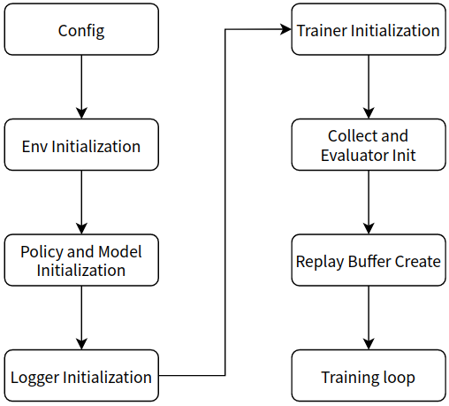

新旧pipeline的异同¶
旧pipeline¶
是什么¶
旧版本 的运行逻辑是”线性”的，在main函数中，包含了模型训练、测试、保存以及中间数据记录的直观表达，另外在新版本的 entry 目录下保留了这类入口文件。
ps：这里所谓的”线性”是指在进行代码阅读时，阅读到哪一行，程序就运行到哪一行，当前文件里没有的代码也可以通过跳转来阅读，可以说是”所读即所得”。 数据流的传递是非常直观的，需要什么就定义什么，定义什么就使用什么。
基本都可以规范为如下流程：
config ->
env(include env manager, collect_env and eval_env) initialization -> policy and model initialization (model initialization may be in policy) -> logger initialization ->
trainer(or learner) initialization -> collect and evaluator initialization -> replay buffer(only for online rl) create ->
start train loop(omitted)
为什么¶
这一版本的代码阅读上并不困难，仿写或改写一个算法是非常直观且方便的。
在这一流程中，给予开发者的自由度是非常高的，在仿写、改写、debug过程中并不需要考虑太多的接口及调用，仅处理好代码中用到的调用（如policy、model初始化时调用所需参数）即可。
但是对于单个算法而言简单、顺畅的流程于整体而言未必是一件好事，同时较高的自由度会带来更大的维护难度和负担，导致我们这一版本逐渐庞大，代码上有很多冗余。比如在train loop中，几乎所有算法都依照环境交互、模型交互、模型训练、记录保存（模型保存）等固定流程进行，很明显这些流程是可以被抽象出来的。
总结来说，这一版本对强化学习背景知识有一定要求，自由度高，开发背景知识门槛低，代码耦合程度高。
新pipeline¶
是什么¶
新版本下，我们添加了重要组件 framework-middleware ，即 框架中间件 ，通过中间件将之前零散的算法统一到框架的管理之中，能很好地实现未来并行化的需求，让更多的开发者在具有一定的相关知识后就能使用此工具实现强化学习智能体的开发。
由于框架的抽象，在初步接触新版本时，可能会觉得开发的自由受到了限制，但这是一种错觉！我们在新版本的实现中以另一种方式保留了开发的自由，参照下图：

仅将一些流程（如stepcollect、train、ckptsave）抽象为一个个模块（图中不同颜色的方块），而在如何使用这些模块，以及使用什么模块等方面仍保有极大的自由。
换句话说，新版本中将算法的各种流程抽象为新的函数，以期望新版本中出现更多的”函数调用”而不是流程编写。这些函数各自负责整个训练流程的一个模块，如evaluator负责评价模型性能，trainer负责模型训练，CkptSaver负责模型的保存等等。而这些模块中如果需要数据传递，则统一使用Context来进行。我们将Context当作所有task的背景上下文，可以取用Context的数据或将数据写入Context。
新版本下数据流的传递有了很大变化，由于流程化的方式变更为模块化，直观的变量定义并不能满足需要，我们使用context来实现各模块间的数据传递，context挂载在我们的中央管理模块task上，task中调用的所有模块都可以使用context来获取自己想要的数据。
task的管理方式如下图：

新的版本可以规范为以下流程：
config -> task start ->
env(include collect_env and eval_env) init -> policy and model init (model init may in policy) -> logger init ->
Eval call -> Collector call -> Learner call -> logger call -> CkptSaver call (all in this line can be customized) ->
task.run()
为什么¶
这一版本并没有将老版本的优点抹杀，仿写、改写仍是直观且方便的，开发过程中也是十分自由的。另外新版本在需要用户编写的代码量上明显降低，特别是在一些经典算法上，所有模块都已经完成了抽象工作并已经包含在middleware中。
新的版本能更好地支持并行化的工作，更好的模块化是更好地并行的准备工作。但是代码流程的理解难度增加了，想要逐行地了解文件中每一句话都在做什么更困难了。当然，这一定程度上是模块化的代价。后面会考虑对这点进行优化。
在调试中也稍微添加了一些阻碍，因为总体流程上是由task管理而不能按代码序列执行，所以需要先阅读上一小节或官方文档中 关于系统设计的部分，理解了task的机制后对于代码如何运行以及应当如何修改等都会得心应手了。
这一版本的优势在于降低了对于强化学习背景知识的门槛，同时保留了开发较快的优点，但在理解难易程度和学习成本上稍有不足。
总的来说，新版本的强化学习背景知识门槛有所降低，开发自由度高，开发背景知识门槛略有提高，代码耦合程度低。
新旧pipeline特点对照表¶
新旧版本对比表 |
强化学习背景知识要求 |
开发背景知识要求 |
代码耦合度 |
开发自由度 |
上手难易度 |
并行潜力 |
|---|---|---|---|---|---|---|
新 |
低 |
中 |
低 |
高 |
中 |
高 |
旧 |
高 |
低 |
高 |
高 |
低 |
低 |